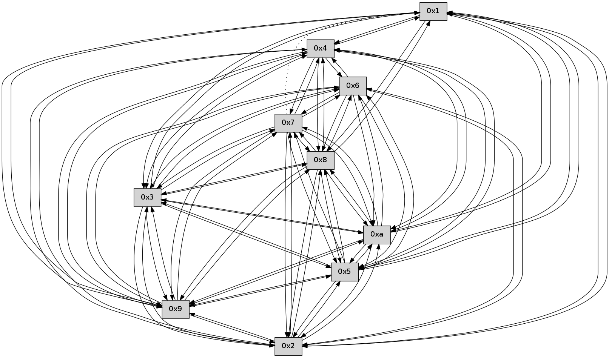

>> << IDX [start] -100 -25 -5 +0 +5 +25 +100 [140.007346153]
 Previous packets
----------------------------------------------------------------------
135.198567 beacon01(faad) #0 coord=01,02,03,04,05,06,07,0a,09,08 cycle=688.0ms assoc
-- color-indic=0 64 33 f7
135.208550 beacon02(faad) #0 coord=01,02,03,04,05,06,07,0a,09,08 cycle=688.0ms assoc 64 a0 c6
135.218549 beacon03(faad) #0 coord=01,02,03,04,05,06,07,0a,09,08 cycle=688.0ms assoc 64 da 8b
135.228551 beacon04(faad) #0 coord=01,02,03,04,05,06,07,0a,09,08 cycle=688.0ms assoc 64 ad 61
135.238550 beacon05(faad) #0 coord=01,02,03,04,05,06,07,0a,09,08 cycle=688.0ms assoc 64 d7 2c
135.248551 beacon06(faad) #0 coord=01,02,03,04,05,06,07,0a,09,08 cycle=688.0ms assoc 64 59 fb
135.258549 beacon07(faad) #0 coord=01,02,03,04,05,06,07,0a,09,08 cycle=688.0ms assoc 64 23 b6
135.268556 beacon0a(faad) #0 coord=01,02,03,04,05,06,07,0a,09,08 cycle=688.0ms assoc 64 52 bd
135.278555 beacon09(faad) #0 coord=01,02,03,04,05,06,07,0a,09,08 cycle=688.0ms assoc 64 dc 6a
135.288558 beacon08(faad) #0 coord=01,02,03,04,05,06,07,0a,09,08 cycle=688.0ms assoc 64 a6 27
135.299703 [Hello(4): seq=92 sym=5,7,6,2,3,9,8,10 sysInfo= stat=5:5,0,0,0/7:0,0,0,0/6:11,0,0,0/2:5,0,0,0/3:6,0,0,0/9:9,0,0,0/8:6,0,0,0/10:13,0,0,0]
135.303164 [Hello(2): seq=91 sym=4,5,7,6,3,9,8,10 sysInfo= stat=4:10,0,0,0/5:15,0,0,0/7:10,0,0,0/6:2,0,0,0/3:11,0,0,0/9:6,0,0,0/8:8,0,0,0/10:12,0,0,0]
135.305563 [Hello(8): seq=34 sym=5,2,3,4,7,6,9,10 sysInfo= stat=5:5,0,0,0/2:6,0,0,0/3:6,0,0,0/4:5,0,0,0/7:7,0,0,0/6:9,0,0,0/9:14,0,0,0/10:9,0,0,0]
135.307974 [Hello(9): seq=34 sym=5,2,3,4,7,6,8,10 sysInfo= stat=5:8,0,0,0/2:7,0,0,0/3:5,0,0,0/4:8,0,0,0/7:5,0,0,0/6:6,0,0,0/8:0,0,0,0/10:9,0,0,0]
135.313203 [Hello(5): seq=92 sym=7,6,4,2,3,9,8,10 sysInfo= stat=7:6,0,0,0/6:3,0,0,0/4:3,0,0,0/2:15,0,0,0/3:14,0,0,0/9:8,0,0,0/8:7,0,0,0/10:14,0,0,0]
135.315780 [Hello(10): seq=23 sym=6,3,2,5,9,8,7,4 sysInfo= stat=6:2,0,0,0/3:15,0,0,0/2:14,0,0,0/5:13,0,0,0/9:5,0,0,0/8:10,0,0,0/7:1,0,0,0/4:11,0,0,0]
135.322499 [Hello(3): seq=92 sym=5,7,6,4,2,8,9,10 sysInfo= stat=5:3,0,0,0/7:1,0,0,0/6:8,0,0,0/4:4,0,0,0/2:6,0,0,0/8:7,0,0,0/9:4,0,0,0/10:13,0,0,0]
----------------------------------------------------------------------
135.986699 beacon01(faad) #0 coord=01,02,03,04,05,06,07,0a,09,08 cycle=688.0ms assoc
-- color-indic=0 64 f7 f9
135.996681 beacon02(faad) #0 coord=01,02,03,04,05,06,07,0a,09,08 cycle=688.0ms assoc 64 64 c8
136.006682 beacon03(faad) #0 coord=01,02,03,04,05,06,07,0a,09,08 cycle=688.0ms assoc 64 1e 85
136.016682 beacon04(faad) #0 coord=01,02,03,04,05,06,07,0a,09,08 cycle=688.0ms assoc 64 69 6f
136.026683 beacon05(faad) #0 coord=01,02,03,04,05,06,07,0a,09,08 cycle=688.0ms assoc 64 13 22
136.036682 beacon06(faad) #0 coord=01,02,03,04,05,06,07,0a,09,08 cycle=688.0ms assoc 64 9d f5
136.046683 beacon07(faad) #0 coord=01,02,03,04,05,06,07,0a,09,08 cycle=688.0ms assoc 64 e7 b8
136.056686 beacon0a(faad) #0 coord=01,02,03,04,05,06,07,0a,09,08 cycle=688.0ms assoc 64 96 b3
136.066689 beacon09(faad) #0 coord=01,02,03,04,05,06,07,0a,09,08 cycle=688.0ms assoc 64 18 64
136.076688 beacon08(faad) #0 coord=01,02,03,04,05,06,07,0a,09,08 cycle=688.0ms assoc 64 62 29
136.088435 [Hello(6): seq=92 sym=2,3,5,4,7,9,8,10 sysInfo= stat=2:15,0,0,0/3:1,0,0,0/5:1,0,0,0/4:1,0,0,0/7:14,0,0,0/9:7,0,0,0/8:6,0,0,0/10:4,0,0,0]
136.093395 [Hello(7): seq=92 sym=2,3,5,6,4,8,9,10 sysInfo= stat=2:7,0,0,0/3:2,0,0,0/5:1,0,0,0/6:3,0,0,0/4:1,0,0,0/8:5,0,0,0/9:8,0,0,0/10:4,0,0,0]
136.098999 [Hello(1): seq=0 asym=4,2,9,5,10,3 sysInfo= stat=4:0,0,0,0/2:0,0,0,0/9:0,0,0,0/5:0,0,0,0/10:0,0,0,0/3:0,0,0,0]
----------------------------------------------------------------------
136.774830 beacon01(faad) #0 coord=01,02,03,04,05,06,07,0a,09,08 cycle=688.0ms assoc
-- color-indic=0 64 4b fc
136.784813 beacon02(faad) #0 coord=01,02,03,04,05,06,07,0a,09,08 cycle=688.0ms assoc 64 d8 cd
136.794814 beacon03(faad) #0 coord=01,02,03,04,05,06,07,0a,09,08 cycle=688.0ms assoc 64 a2 80
136.804812 beacon04(faad) #0 coord=01,02,03,04,05,06,07,0a,09,08 cycle=688.0ms assoc 64 d5 6a
136.814812 beacon05(faad) #0 coord=01,02,03,04,05,06,07,0a,09,08 cycle=688.0ms assoc 64 af 27
136.824812 beacon06(faad) #0 coord=01,02,03,04,05,06,07,0a,09,08 cycle=688.0ms assoc 64 21 f0
136.834814 beacon07(faad) #0 coord=01,02,03,04,05,06,07,0a,09,08 cycle=688.0ms assoc 64 5b bd
136.844817 beacon0a(faad) #0 coord=01,02,03,04,05,06,07,0a,09,08 cycle=688.0ms assoc 64 2a b6
136.854818 beacon09(faad) #0 coord=01,02,03,04,05,06,07,0a,09,08 cycle=688.0ms assoc 64 a4 61
136.864818 beacon08(faad) #0 coord=01,02,03,04,05,06,07,0a,09,08 cycle=688.0ms assoc 64 de 2c
136.875985 [Hello(10): seq=24 sym=6,3,2,5,9,8,7,4,1 sysInfo= stat=6:3,0,0,0/3:0,0,0,0/2:14,0,0,0/5:13,0,0,0/9:5,0,0,0/8:10,0,0,0/7:2,0,0,0/4:11,0,0,0/1:0,0,0,0]
136.879606 [Hello(2): seq=92 sym=4,5,7,6,3,9,8,10,1 sysInfo= stat=4:10,0,0,0/5:0,0,0,0/7:11,0,0,0/6:3,0,0,0/3:12,0,0,0/9:7,0,0,0/8:9,0,0,0/10:13,0,0,0/1:0,0,0,0]
136.882221 [Hello(8): seq=35 sym=5,2,3,4,7,6,9,10 asym=1 sysInfo= stat=5:6,0,0,0/2:6,0,0,0/3:7,0,0,0/4:5,0,0,0/7:8,0,0,0/6:10,0,0,0/9:15,0,0,0/10:10,0,0,0/1:0,0,0,0]
136.885833 [Hello(4): seq=93 sym=5,7,6,2,3,9,8,10,1 sysInfo= stat=5:6,0,0,0/7:1,0,0,0/6:12,0,0,0/2:6,0,0,0/3:7,0,0,0/9:10,0,0,0/8:7,0,0,0/10:14,0,0,0/1:0,0,0,0]
136.889000 [Hello(5): seq=93 sym=7,6,4,2,3,9,8,10,1 sysInfo= stat=7:7,0,0,0/6:4,0,0,0/4:3,0,0,0/2:15,0,0,0/3:15,0,0,0/9:8,0,0,0/8:7,0,0,0/10:15,0,0,0/1:0,0,0,0]
136.900484 [Hello(9): seq=35 sym=5,2,3,4,7,6,8,10,1 sysInfo= stat=5:9,0,0,0/2:7,0,0,0/3:6,0,0,0/4:8,0,0,0/7:6,0,0,0/6:7,0,0,0/8:0,0,0,0/10:10,0,0,0/1:0,0,0,0]
137.632949 beacon0a(faad) #0 coord=01,02,03,04,05,06,07,0a,09,08 cycle=688.0ms assoc 64 be 6f
137.664117 [Hello(1): seq=1 sym=4,2,9,5,3,8 asym=10 sysInfo= stat=4:1,0,0,0/2:1,0,0,0/9:1,0,0,0/5:1,0,0,0/3:1,0,0,0/8:0,0,0,0/10:0,0,0,0]
----------------------------------------------------------------------
138.351095 beacon01(faad) #0 coord=01,02,03,04,05,06,07,0a,09,08 cycle=688.0ms assoc
-- color-indic=0 64 63 20
138.361076 beacon02(faad) #0 coord=01,02,03,04,05,06,07,0a,09,08 cycle=688.0ms assoc 64 f0 11
138.371077 beacon03(faad) #0 coord=01,02,03,04,05,06,07,0a,09,08 cycle=688.0ms assoc 64 8a 5c
138.381077 beacon04(faad) #0 coord=01,02,03,04,05,06,07,0a,09,08 cycle=688.0ms assoc 64 fd b6
138.391077 beacon05(faad) #0 coord=01,02,03,04,05,06,07,0a,09,08 cycle=688.0ms assoc 64 87 fb
138.401078 beacon06(faad) #0 coord=01,02,03,04,05,06,07,0a,09,08 cycle=688.0ms assoc 64 09 2c
138.411077 beacon07(faad) #0 coord=01,02,03,04,05,06,07,0a,09,08 cycle=688.0ms assoc 64 73 61
138.421082 beacon0a(faad) #0 coord=01,02,03,04,05,06,07,0a,09,08 cycle=688.0ms assoc 64 02 6a
138.441083 beacon08(faad) #0 coord=01,02,03,04,05,06,07,0a,09,08 cycle=688.0ms assoc 64 f6 f0
138.452581 [Hello(7): seq=93 sym=2,3,5,6,4,8,9,10 asym=1 sysInfo= stat=2:8,0,0,0/3:2,0,0,0/5:2,0,0,0/6:3,0,0,0/4:2,0,0,0/8:6,0,0,0/9:9,0,0,0/10:5,0,0,0/1:1,0,0,0]
138.455386 [Hello(9): seq=36 sym=5,2,3,4,7,6,8,10,1 sysInfo= stat=5:9,0,0,0/2:7,0,0,0/3:6,0,0,0/4:8,0,0,0/7:6,0,0,0/6:7,0,0,0/8:0,0,0,0/10:10,0,0,0/1:1,0,0,0]
138.462115 [Hello(10): seq=25 sym=6,3,2,5,9,8,7,4,1 sysInfo= stat=6:3,0,0,0/3:0,0,0,0/2:15,0,0,0/5:14,0,0,0/9:6,0,0,0/8:11,0,0,0/7:2,0,0,0/4:12,0,0,0/1:1,0,0,0]
138.467367 [Hello(8): seq=36 sym=5,2,3,4,7,6,9,10,1 sysInfo= stat=5:7,0,0,0/2:6,0,0,0/3:7,0,0,0/4:6,0,0,0/7:8,0,0,0/6:10,0,0,0/9:0,0,0,0/10:10,0,0,0/1:1,0,0,0]
139.159209 beacon03(faad) #0 coord=01,02,03,04,05,06,07,0a,09,08 cycle=688.0ms assoc 64 4e 52
139.199211 beacon07(faad) #0 coord=01,02,03,04,05,06,07,0a,09,08 cycle=688.0ms assoc 64 b7 6f
139.209215 beacon0a(faad) #0 coord=01,02,03,04,05,06,07,0a,09,08 cycle=688.0ms assoc 64 c6 64
139.240747 [Hello(4): seq=94 sym=5,7,6,2,3,9,8,10,1 sysInfo= stat=5:7,0,0,0/7:1,0,0,0/6:13,0,0,0/2:6,0,0,0/3:7,0,0,0/9:12,0,0,0/8:8,0,0,0/10:15,0,0,0/1:1,0,0,0]
139.243757 [Hello(5): seq=94 sym=7,6,4,2,3,9,8,10,1 sysInfo= stat=7:8,0,0,0/6:4,0,0,0/4:3,0,0,0/2:15,0,0,0/3:15,0,0,0/9:10,0,0,0/8:8,0,0,0/10:0,0,0,0/1:1,0,0,0]
139.252483 [Hello(1): seq=2 sym=4,2,9,5,10,3,8 sysInfo= stat=4:1,0,0,0/2:1,0,0,0/9:2,0,0,0/5:1,0,0,0/10:1,0,0,0/3:1,0,0,0/8:1,0,0,0]
139.261262 [Hello(3): seq=94 sym=5,7,6,4,2,8,9,10,1 sysInfo= stat=5:4,0,0,0/7:2,0,0,0/6:10,0,0,0/4:5,0,0,0/2:7,0,0,0/8:9,0,0,0/9:6,0,0,0/10:14,0,0,0/1:1,0,0,0]
----------------------------------------------------------------------
139.927358 beacon01(faad) #0 coord=01,02,03,04,05,06,07,0a,09,08 cycle=688.0ms assoc
-- color-indic=0 64 1b 2b
139.937340 beacon02(faad) #0 coord=01,02,03,04,05,06,07,0a,09,08 cycle=688.0ms assoc 64 88 1a
139.947341 beacon03(faad) #0 coord=01,02,03,04,05,06,07,0a,09,08 cycle=688.0ms assoc 64 f2 57
139.957342 beacon04(faad) #0 coord=01,02,03,04,05,06,07,0a,09,08 cycle=688.0ms assoc 64 85 bd
139.967341 beacon05(faad) #0 coord=01,02,03,04,05,06,07,0a,09,08 cycle=688.0ms assoc 64 ff f0
139.977342 beacon06(faad) #0 coord=01,02,03,04,05,06,07,0a,09,08 cycle=688.0ms assoc 64 71 27
139.987342 beacon07(faad) #0 coord=01,02,03,04,05,06,07,0a,09,08 cycle=688.0ms assoc 64 0b 6a
139.997346 beacon0a(faad) #0 coord=01,02,03,04,05,06,07,0a,09,08 cycle=688.0ms assoc 64 7a 61